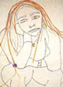

پذيرش > كوچه به كوچه > یک اتفاق به ظاهر ساده /کیانا خسروی راد


 یک اتفاق به ظاهر ساده /کیانا خسروی راد یک اتفاق به ظاهر ساده /کیانا خسروی راد
12 تیر 1386 - - نسخه قابل چاپ
در ايستگاه اتوبوس نشسته بودم و منتظر پدرم بودم. مثل هميشه كه يك خانم در مكاني عمومي به مدت چند دقيقه منتظر بماند، از مزاحمت ها در امان نخواهد بود، نگاه هاي پسر جواني آزارم مي داد، اعتماد به نفسم را باز من می گرفت و حتی اجازه نمی داد که برگه های امضایم را در آورم . پيش خود فكر كردم كه تا خواست مزاحمتي ايجاد كند براي اينكه مطمئن شوم ديگر آزاري برايم نخواهد داشت، به او خواهم گفت كه منتظر پدرم هستم و اگر دنبال دردسر مي گردد، مي تواند به اعمال خود ادامه دهد.
ناگهان موضوعي به ذهنم رسيد كه هيچ گاه به آن توجه نكرده بودم: اينكه چه دليلي دارد در اين طور مواقع اين فكر پدر و يا برادرم باشد كه به من آرامش و امنيت دهد و چرا تنها صرف حضور و وجود خودم و رفتارهاي اجتماعي ام به من امنيتي نمي دهد؟ هرگاه تنها باشم از مزاحمت ها در امان نیستم؟ مثلا اگر در حال حاضر برادر يا پدرم همراهم بودند مطمئنا من تا حد زيادي از اين نگاه ها مصون می ماندم و يا حتي زماني كه ما زنان در خيابان قدم مي زنیم اگر همراه مرد ديگري باشيم از امنيت بيشتري برخوردار هستيم به خصوص براي لات هايي كه معناي شرف، برايشان بي معنا نشده و معتقدند مزاحمت براي ناموس مردم قباحت دارد.
اما من مانده ام اين ناموس مردم. اگر آقا بالاسري نداشته باشد چرا امنيتش بي معنا مي شود و هركس و ناكسي به خود اجازه بي احترامي مي دهد؟ براي مثال تجربه ديگر خودم را بيان مي كنم:
هرگاه در تاكسي در كنار پدر يا برادرم باشم، از مزاحمت هاي مردي كه كنارم مي نشيند در امانم. در حالي كه وقتي به تنهايي مي نشينم هميشه دلهره دارم و وقتي هم كه مورد مزاحمت قرار مي گيرم، به دليل اينكه از اين اعمال بسيار بدم مي آيد، خجالت مي كشم به راننده بگويم كه اين فرد را از ماشين پياده كند. البته اوقاتي هم در كنار مادرم هستم باز هم از اين آزارها در امان نيستم و تنها مرد است كه به من آرامش و امنيت مي دهد. مطمئنا زنان متأهل هم از زماني كه به خانه شوهر رفته اند وجود او و سايه بالاي سرشان، امنيت بخش است.
به نظرم اين افكار و اعمال ريشه در شرايط اجتماعي و رفتارهايي دارد كه فرد در پي جامعه پذيري با آنها رشد مي كند. اينكه دختر تا زمان ازدواج در هر سني كه باشد بايد از اجازه پدر براي زندگي اش برخوردار باشد و پس از آن به دست مردي سپرده مي شود كه اختيارات بيشتري از پدرش نسبت به او دارد و البته ساختار اجتماعي-فرهنگي جامعه، موجب مي شود كه زن، در كنار مرد هويت و معنا يابد و در جامعه در امان باشد واين حضور فرد صاحب اختيار در كنارش باشد كه از مزاحمت هاي برخي افراد مصون باشد. البته اين افكار به اينجا ختم نمي شود، زيرا حتي برخي از زنان همين جامعه نسبت به زناني كه عرف جامعه را رعايت نمي كنند، اظهار مي دارند كه چه پدر، شوهر و يا برادر بي غيرتي دارد كه اجازه مي دهد او اين گونه در جامعه حاضر شود. البته من هرگز قصد تاختن به پشت گرمي هاي خود و ساير دختران و زنان و يا دفاع از عرف شكني برخي از افراد را ندارم اما معتقدم كه براي تغيير عقايد و رفتار افراد در جامعه امروز كه تنها قانون مي تواند تا حدي از تخلفات جلوگيري كند، بايد قانون اجازه پرورش چنين افكاري را ندهد.
اين اتفاقات به ظاهر ساده كه در زندگي روزمره همه ما خانم ها بسيار آشناست، موجب مي شود كه هميشه احساس كنيم چون جامعه گرگ است نياز به آقا بالاسر داريم. ضمنا زماني كه چنين ديدگاهي در جامعه رشد يابد (اينكه اين وضعيت جامعه(بي حجابي و ... زنان) نشان از بي غيرتي مردان آنهاست)، جهت تربيت افراد جامعه دست به دامان تربيت تنبيهي مي شويم و از تشويق و شكوفايي افراد و تربيت زنان به خاطر وجود خودشان دور مي مانيم و اين نوع تربيت خواهد بود كه باز هم ظلم مضاعفي را به زنان جامعه اعمال خواهد كرد و مردان را در برخي مواقع تشويق مي كند كه براي نشان دادن غيرت خود دست به دامان اعمال وحشيانه اي شوند كه واقعيت اين موضوع را تصديق مي كند.
صد البته باز بيان تجربياتمان است كه وجوب تغيير را نشان مي دهد. چون تغييراتي كه از پائين به بالا ريشه داشته باشند، ماندگار تر است وقابليت تطبيق بيشتري خواهد داشت.
ارسال به
بالاترین
،
توییتر
،
فریندفید
،
فیسبوک
در همين بخش :
 روايت بيست و پنجمين شهريور / نرگس طیبات روايت بيست و پنجمين شهريور / نرگس طیبات
وقتی آتش خاموش شود/فرشته نوبخت
آن گاه که زن شدم / ویژه نامه 8 مارس 1391
چیزی زیر پوست این شهر می جوشد / دلارام علی
گرسنگی / وبلاگ سیب و سرگشتگی
ديگر بخش ها :
طرح یک میلیون امضا
|
مقالات
|
سایت نوشته ها
|
اخبار
|
گزارش كمپين
|
گفت و گو
|
علیه سکوت
|
كوچه به كوچه
|
نامه های شما
|
گزارش ویژه
|
گفتگو با اعضا
|
ویژه سالگرد کمپین
|
تصویر برابری
|
دل آرام علی
|
تریبون
|
مقالات
|
تاریخ شفاهی
|
خارج از چارچوب
|
کتابخانه
|
درباره کمپین
|
کمپین در شهرها
|
کمپین در بند
|
صدای تغییر
|
ویژه 22 خرداد
|
لایحه حمایت از خانواده
|
گالری
|
عشا مومنی
|
امیر یعقوبعلی
|
خدیجه مقدم
|
راحله عسگری زاده و نسیم خسروی
|
پروین اردلان،جلوه جواهری، مریم حسین خواه، ناهید کشاورز
|
زینب پیغمبرزاده
|
سعیده امین، سارا ایمانیان، محبوبه حسین زاده، ناهید کشاورز و همایون نامی
|
احترام شادفر
|
نسیم سرابندی زاده،فاطمه دهدشتی
|
وبلاگ مهمان
|
پرونده خرم آباد
|
دستگیری ها
|
مریم مالک
|
پرستو اللهیاری
|
مهرنوش اعتمادی
|
سمیه رشیدی
|
Other Languages
|
همراهان
|
«فراخوان کمپین ده روز با بهاره هدایت»
| English
|